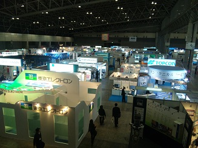
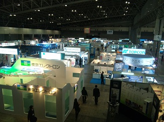
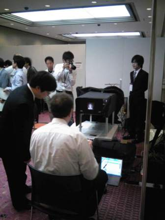
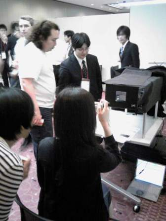
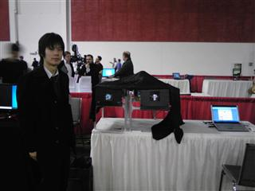
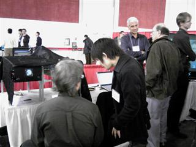

-Activities-
Exhibition of Full-HD Autostereoscopic Displays
7/Dec/2017
We demonstrated our full-HD autostereoscopic display at I-DEMO in IDW 2017
30/Aug/2017
We demonstrated our full-HD autostereoscopic display at SF-Zone in IMID 2017.
23-25/May/2017
We demonstrated our full-HD autostereoscopic display at I-Zone in SID Display Week 2017.
9/Dec/2016
Our paper titled "Parallax Barrier Based Autostereoscopic Display with a Deep Viewing Zone" received the Best Paper Award at 3DSA 2016.
7-11/Oct/2014
We exhibited a high definition autostereoscopic display at CEATEC 2014.
1-5/Oct/2013
We exhibited high definition autostereoscopic displays at CEATEC 2013.
SIGGRAPH ASIA 2012
2/Nov/2012
We presented "Floating Volume Viewer" at SIGGRAPH ASIA 2012.
DigiInfo TV
5/Nov/2011
Our research was introduced at DigInfo TV.
CEATE 2011
4-8/Oct/2011
We exhibited our new 3D displays at CEATEC 2011.
SPIE 2011
24-27/Jan/2011
We exhibited two 3D displays at SPIE Electronici Imaging 2011 in San Francisco (USA)


Innovation JAPAN2010 and FPD International 2010
29/Sep-1/Oct/2010 and 10-12/Nov/2010
We exhibited two 3D displays at Innovation JAPAN2010 and FPD International 2010.
 

3DSA 2010
19-21/May/2010
We exhibited two 3D displays at 3DSA2010, held in General Academy Center
 SPIE 2010
18-21/Jan/2010
We exhibited two 3D displays at SPIE Electronici Imaging 2010 in San Jose (USA)
 We exhibited to the Inovation Japan 2009
16-18/Sep/2009
We exhibited 3 tyeps of 3D displays at the Inovation Japan 2009, held in Tokyo International Forum.

Annual conference 2009 by The Institute of Image Information and Television Engineers.
27/Aug/2009
Our lab. member, Yuichiro MANO (M2) was awarded scholar outstanding performance presentation award.
 |
 |
| Ceremonial Photograph with Ms. Handa, TV announcer, at the award ceremony. |
Academic research presentation at the Society of Automotive Engineers of Japan
Mar/2009
Our lab. member Yuichiro MANO(M1) was awarded best presentation award.

Annual conference 2008 by The Institute of Image Information and Television Engineers.
Aug/2008
Our lab. member Takeru MATSUDA(M2) awarded scholar outstanding performance presentation award.
Inovation Japan 2007
12-14/Sep/2007
We exhibited 2 stereoscopic display to the Inovation Japan 2007 at Tokyo International Forum.


CEATEC JAPAN 2006
3-7/Oct/2006
We exibited stereoscopic display to the event of CEATEC JAPAN at the International Convention Complex.
ＷＢＳ "Trend TAMAGO"
20/Sep/2006
Our 3D display (MOE Vision) introduced at the TV program called WBS(World Business Satellite) Trend TMAGO byTV-Tokyo.
The movie can watch from here(TV-tokyo）

Photo with Ms. Otake announcer from TV-Tokyo.
Inovation Japan 2006
13-15/Sep/2006
We exhibited 2 stereoscopic display (MOE vision) to the Inovation Japan 2006 at Tokyo International Forum.